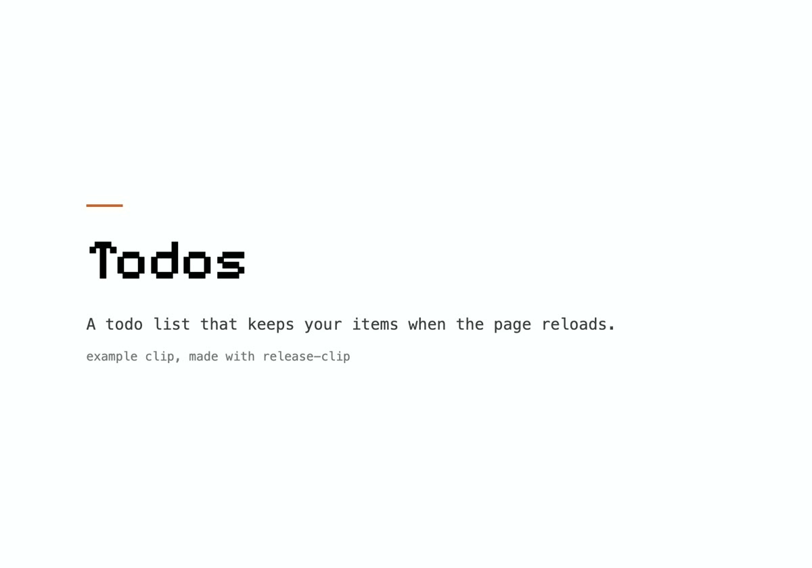
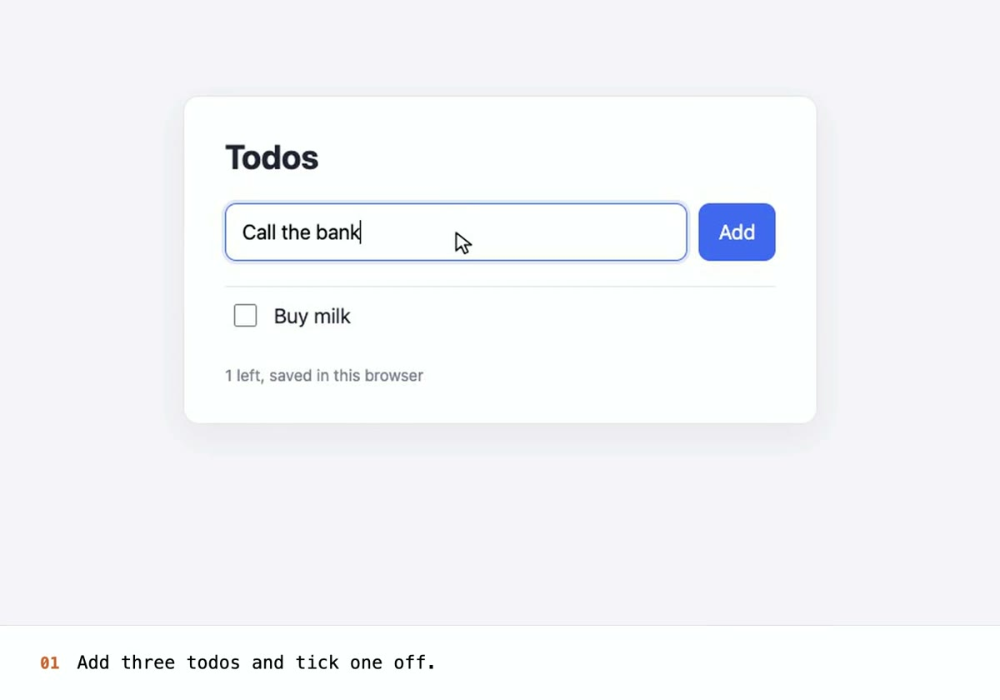
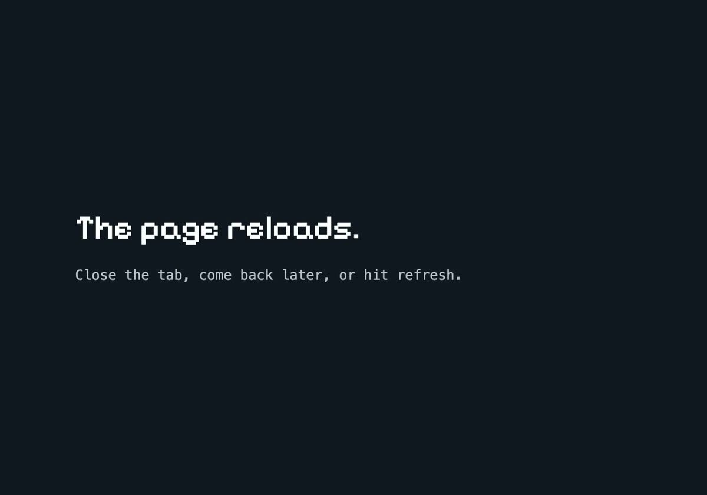
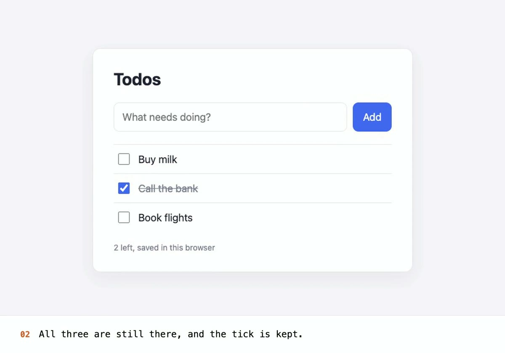

After: the same request with release-clip
examples/run-example.sh (a real run; frames from the finished clip)

0:01 title card

0:06 step 01, zoomed onto the list

0:13 a card says what just happened

0:16 step 02, the proof
- True speed, checked against a page showing a running clock: it moved 10.10 s across 10.13 s of video.
- Title, numbered captions, eased zooms, a card for the reload, an end card with the repo link.
- 19 s, 1600×1120 H.264, 414 KB, plus a poster frame for the site's video tag.